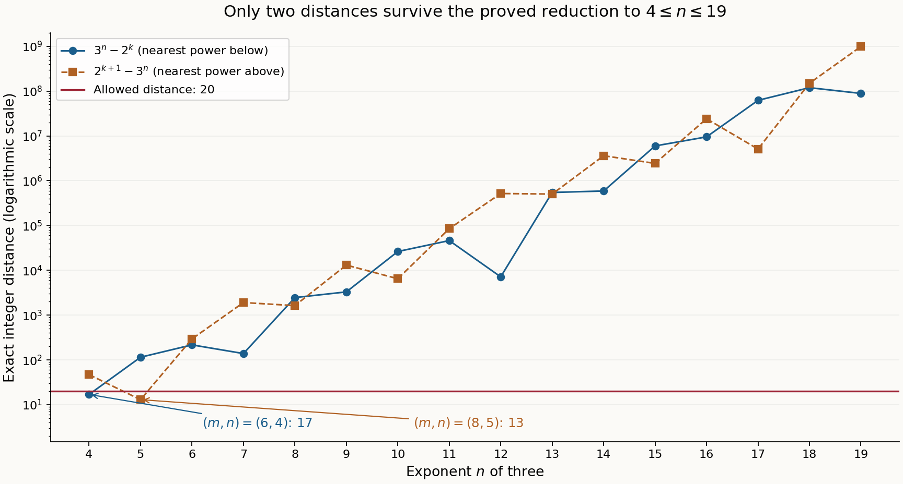

Powers of two and three, S-unit gaps, and 3x+1 cycles
Authoring and mathematical self-check: OpenAI Codex — GPT-6 Astra, Ultra. Public domain (CC0).
An effective lower bound makes an infinite Diophantine problem finite. Continued fractions then reduce the finite interval to a short list whose entries can be checked with integers. The distinction matters: checking many powers is an experiment until a proof bounds every possible exponent.
We use Theorem 7.1 of Two logarithms II: explicit lower bounds, equation (7.1), with its proved constant 21600. All logarithms below are real natural logarithms. The continued-fraction facts needed in the reduction are proved here. Ben Lynn's freely accessible notes on convergence of continued fractions give complementary discussion of convergents and Legendre's criterion.
1. The lattice behind continued fractions
Let \(\theta>0\) be irrational. Starting with \(\theta_0=\theta\), define \[ a_j=\lfloor\theta_j\rfloor,\qquad \theta_{j+1}=\frac1{\theta_j-a_j}. \tag{11.1} \] Each remainder is nonzero and irrational, so the construction continues indefinitely. For \(j\ge1\), \(\theta_j>1\) and \(a_j\ge1\). Set \[ \begin{gathered} p_{-2}=0,\quad p_{-1}=1,\qquad q_{-2}=1,\quad q_{-1}=0,\\ p_j=a_jp_{j-1}+p_{j-2},\qquad q_j=a_jq_{j-1}+q_{j-2}. \end{gathered} \tag{11.2} \]
Lemma 11.1 (exact convergent identities). For every \(j\ge0\), \[ \begin{aligned} p_jq_{j-1}-p_{j-1}q_j&=(-1)^{j-1},\\ \theta&=\frac{p_j\theta_{j+1}+p_{j-1}} {q_j\theta_{j+1}+q_{j-1}}. \end{aligned} \tag{11.3} \] In particular \(p_j,q_j\) are coprime. If \(e_j=q_j\theta-p_j\), then \[ e_j=\frac{(-1)^j}{q_j\theta_{j+1}+q_{j-1}},\qquad e_{j-1}=-\theta_{j+1}e_j. \tag{11.4} \] Here \(e_{-1}=-1\). The denominators tend to infinity and \(p_j/q_j\) tends to \(\theta\).
Proof. Substituting (11.2) into the determinant in (11.3) changes its sign at each step; at \(j=0\) its value is \(-1\). A common divisor of \(p_j,q_j\) therefore divides one. For the second identity at \(j=0\), use \(\theta=a_0+1/\theta_1\). Substitution of \(\theta_j=a_j+1/\theta_{j+1}\) proves the next identity from the previous one. Subtract \(p_j\) from \(q_j\theta\) in that identity and use the determinant; this proves the first formula in (11.4). Rearranging the same identity proves the second.
We have \(q_0=1\), \(q_1\ge1\), and \(q_j\ge q_{j-1}+q_{j-2}\) for \(j\ge2\). Thus the denominators are strictly increasing from \(q_1\) onward and unbounded. Formula (11.4) gives \(|\theta-p_j/q_j|<1/q_j^2\), proving convergence. \(\square\)
Lemma 11.2 (best approximation for the numerator error). If \(a,b\) are integers and \(0<b<q_{j+1}\), then \[ |b\theta-a|\ge |e_j|. \tag{11.5} \]
Proof. The determinant in (11.3) is a unit in \(\mathbb Z\). Its inverse has integer entries, so there are integers \(r,s\) with \[ (a,b)=r(p_j,q_j)+s(p_{j-1},q_{j-1}). \] If the claimed inequality failed, (11.4) would give \(|r-s\theta_{j+1}|<1\). When \(s=0\), positivity of \(b\) implies \(r\ge1\), a contradiction. When \(s\ge1\), the strict inequality \(\theta_{j+1}>a_{j+1}\) implies \(r>s a_{j+1}-1\). Since \(r\) is an integer, \(r\ge s a_{j+1}\), whence \[ b=rq_j+sq_{j-1}\ge s q_{j+1}\ge q_{j+1}, \] again a contradiction. Finally, if \(s\le-1\), the same inequality implies \(r<s a_{j+1}+1\), hence \(r\le s a_{j+1}\) and \(b\le s q_{j+1}<0\). These cases are exhaustive. \(\square\)
Theorem 11.3 (Legendre's criterion). Suppose \(a,b\) are coprime integers, \(b>0\), and \[ \left|\theta-\frac ab\right|<\frac1{2b^2}. \tag{11.6} \] Then \(a/b\) is a convergent of \(\theta\).
Proof. Choose the largest \(j\) such that \(q_j\le b\). Such an index exists by Lemma 11.1, including when \(q_0=q_1=1\), and \(b<q_{j+1}\). If \(a/b\ne p_j/q_j\), the nonzero integer \(a q_j-b p_j\) has absolute value at least one. Lemma 11.2 gives \[ \begin{aligned} 1&\le |a q_j-b p_j|\\ &\le q_j|b\theta-a|+b|q_j\theta-p_j|\\ &\le(q_j+b)|b\theta-a|\le2b|b\theta-a|<1. \end{aligned} \] This contradiction proves the assertion. \(\square\)
2. Powers whose difference is at most twenty
Theorem 11.4. The only positive integers \(m,n\) with \(n\ge4\) and \(|2^m-3^n|\le20\) are \[ (m,n)=(6,4),\qquad (m,n)=(8,5). \tag{11.7} \]
Proof: an initial bound. We have \(2^m\ge3^4-20=61\), so \(m\ge6\). If \(n\ge m\), then \(3^n-2^m\ge3^m-2^m\ge3^6-2^6>20\); the last expression increases with \(m\). Hence \(n<m\). Unique prime factorization shows that \(2^m\ne3^n\), so \(\Lambda=m\log2-n\log3\ne0\).
For positive \(x,y\), integration of \(1/t\) between them gives \[ |\log x-\log y|\le\frac{|x-y|}{\min(x,y)}. \tag{11.8} \] Consequently, \[ |\Lambda|\le\frac{20}{2^m-20} \le\frac{320}{11}\,2^{-m}<30\,2^{-m}, \tag{11.9} \] where \(m\ge6\) gives \(20/2^m\le5/16\).
In Theorem 7.1 take \(D=1\), \(\alpha_1=2\), \(\alpha_2=3\), \(a_1=1\), \(a_2=\log3\), and coefficients \(m,-n\). The heights of these integers are their logarithms, so every height condition holds. Since \(\log3>1\) and \(n<m\), \(B'=m/\log3+n<2m\). Combining the lower bound there with (11.9) yields \[ m\log2<\log30+21600\log3\bigl(\max\{10,\log(2m)\}\bigr)^2. \tag{11.10} \] This implies \[ m<10^7. \tag{11.11} \] Here is a uniform numerical check, rather than a test at a single exponent. For \(x\ge10^7\), \(\log(2x)>10\) and \[ F(x)=x\log2-21600\log3\log^2(2x)-\log30. \] Use \(\log2>69/100\), \(\log3<11/10\), \(\log(2\cdot10^7)<17\), and \(\log30<4\). They give \(F(10^7)>33356>0\). The function \(\log(2x)/x\) decreases for \(x\ge10^7\), and therefore \[ F'(x)\ge\frac{69}{100} -\frac{43200(11/10)17}{10^7}>0. \] Thus (11.10) cannot hold at or above \(10^7\). The logarithm bounds are certified below; \(\log(2\cdot10^7)>10\) also follows from \(2\cdot10^7>2^{20}\) and \(20\log2>13.8\).
Proof: the continued-fraction reduction. Put \(\theta=\log3/\log2\). It is irrational: a rational value would, on exponentiating, equate a positive power of three to a positive power of two. For \(n\ge6\), (11.8) gives \[ \left|\theta-\frac mn\right| \le\frac{20}{n\log2(3^n-20)}<\frac1{2n^2}. \tag{11.12} \] The strict inequality is \(40n<\log2(3^n-20)\). It holds at \(n=6\) using \(\log2>69/100\), and remains true because \((3^n-20)/n\) increases: the numerator of its successive difference is \((2n-1)3^n+20>0\).
Let \(g=\gcd(m,n)\), \(m=ga\), \(n=gb\). Then \(a/b\) is reduced and the right side in (11.12) is at most \(1/(2b^2)\). Theorem 11.3 therefore makes \(a/b\) a convergent of \(\theta\). The reduced numerator satisfies \(a\le m<10^7\).
The table below contains every such convergent and the first excluded one. The column \(L_j\) is an integer for which \(10^8|p_j\log2-q_j\log3|>L_j\). Each value comes from rational intervals, as specified after the table.
| \(j\) | \(a_j\) | \(p_j\) | \(q_j\) | sign | \(L_j\) |
|---|---|---|---|---|---|
| 0 | 1 | 1 | 1 | \(-\) | 40546510 |
| 1 | 1 | 2 | 1 | + | 28768207 |
| 2 | 1 | 3 | 2 | \(-\) | 11778303 |
| 3 | 2 | 8 | 5 | + | 5211600 |
| 4 | 2 | 19 | 12 | \(-\) | 1355103 |
| 5 | 3 | 65 | 41 | + | 1146290 |
| 6 | 1 | 84 | 53 | \(-\) | 208813 |
| 7 | 5 | 485 | 306 | + | 102223 |
| 8 | 2 | 1054 | 665 | \(-\) | 4365 |
| 9 | 23 | 24727 | 15601 | + | 1819 |
| 10 | 2 | 50508 | 31867 | \(-\) | 726 |
| 11 | 2 | 125743 | 79335 | + | 366 |
| 12 | 1 | 176251 | 111202 | \(-\) | 360 |
| 13 | 1 | 301994 | 190537 | + | 6 |
| 14 | 55 | 16785921 | 10590737 | \(-\) | 5 |
The final row is excluded by its numerator.
All relevant rows have \(L_j\ge1\). The recurrence has positive terms and its numerators are strictly increasing here, so no later convergent has numerator below \(10^7\). Importantly, the common factor \(g\) is not discarded: \[ |\Lambda|=g|a\log2-b\log3|>10^{-8}. \] Combining this with \(|\Lambda|\le20/(3^n-20)\) gives \(3^n<2\cdot10^9+20\). Since \(3^{20}=3486784401>2000000020\), we obtain \(n\le19\). The cases \(n=4,5\), which did not use (11.12), are included in the following final table as well.
Proof: the final integer check. For each \(4\le n\le19\), let \(k\) be the integer with \(2^k<3^n<2^{k+1}\). Powers with exponent below \(k\) are farther from \(3^n\) than \(2^k\); those with exponent above \(k+1\) are farther than \(2^{k+1}\). Thus only these two nearest powers need checking.
| \(n\) | \(k\) | \(3^n-2^k\) | \(2^{k+1}-3^n\) |
|---|---|---|---|
| 4 | 6 | 17 | 47 |
| 5 | 7 | 115 | 13 |
| 6 | 9 | 217 | 295 |
| 7 | 11 | 139 | 1909 |
| 8 | 12 | 2465 | 1631 |
| 9 | 14 | 3299 | 13085 |
| 10 | 15 | 26281 | 6487 |
| 11 | 17 | 46075 | 84997 |
| 12 | 19 | 7153 | 517135 |
| 13 | 20 | 545747 | 502829 |
| 14 | 22 | 588665 | 3605639 |
| 15 | 23 | 5960299 | 2428309 |
| 16 | 25 | 9492289 | 24062143 |
| 17 | 26 | 62031299 | 5077565 |
| 18 | 28 | 118985033 | 149450423 |
| 19 | 30 | 88519643 | 985222181 |
Exactly two entries are at most twenty: \(3^4-2^6=17\) and \(2^8-3^5=13\). This proves (11.7). \(\square\)

Figure 11.1. Theorem 11.4 reduces all possible solutions to the displayed integer interval. Each marker is an exact entry of its final table, with \(2^k<3^n<2^{k+1}\); the vertical axis is logarithmic. Connecting segments guide the eye between integer exponents. Only the distances 17 and 13 are at most 20. Figure program, exact continued-fraction and integer certificate.
3. Checking the certificate with rational arithmetic
For \(x>1\), put \(z=(x-1)/(x+1)\). Integrating the geometric series for \(2/(1-z^2)\) from zero to \(z\) gives \[ \begin{aligned} L_N(x)&=2\sum_{j=0}^{N-1}\frac{z^{2j+1}}{2j+1},\\ L_N(x)&<\log x<L_N(x) +\frac{2z^{2N+1}}{(2N+1)(1-z^2)}=:U_N(x). \end{aligned} \tag{11.13} \] The tail bound follows by replacing each later denominator by \(2N+1\) and summing a geometric series. All entries are rational when \(x\) is rational. We use \(N=100\) for \(x=2,3\).
Start with the rational interval \([L_N(3)/U_N(2),U_N(3)/L_N(2)]\) for \(\theta\). At every continued-fraction step both endpoints have the same integer part \(a_j\). Subtract it and invert the interval, exchanging the two endpoints. This proves each listed partial quotient, rather than merely approximating it in floating point. For a listed \(p,q\), the interval \[ [pL_N(2)-qU_N(3),\ pU_N(2)-qL_N(3)] \tag{11.14} \] has one strict sign. Its distance from zero is a rational lower bound for \(|p\log2-q\log3|\); the integer part of \(10^8\) times that lower bound gives the printed \(L_j\). Only the first excluded row is unnecessary for the error bound.
For the remaining scalar checks, finite exponential sums suffice: \[ \sum_{j=0}^{60}\frac{17^j}{j!}>20000000,\qquad \sum_{j=0}^{10}\frac{4^j}{j!}>30. \] Every omitted term is positive, so these prove the needed upper bounds on the corresponding logarithms. The supplied program checks these rational inequalities, the signs and partial quotients, the common error bound, and every entry in the final integer table. Its role is to execute a finite certificate; the preceding proofs explain why these finite checks exhaust the infinite problem.
4. Exercises and solutions
-
Initial denominators. For \(1<\theta<2\), explain why the two first denominators may coincide and why this causes no gap in the proof of Legendre's criterion.
Solution. Here \(q_0=1\) and \(q_1=a_1\), which equals one when \(1<\theta_1<2\). From \(q_2=a_2q_1+q_0\) onward the denominators strictly increase. Choosing the largest index with \(q_j\le b\) still gives \(b<q_{j+1}\), including \(b=1\).
-
Reduction of the fraction. Why would it be incorrect to list only pairs \((m,n)\) equal to convergent numerators and denominators in the proof of Theorem 11.4?
Solution. Legendre makes the rational number \(m/n\) a convergent, but \(m,n\) need not be coprime. They may be \((gp_j,gq_j)\). The proof retains all \(g\ge1\) because the logarithmic error is multiplied by \(g\); its lower bound remains valid for every such pair.
-
A particular near miss. Compute \(3^{12}-2^{19}\), and compare its size with its relative logarithmic error.
Solution. The exact integers are \(3^{12}=531441\) and \(2^{19}=524288\), with difference \(7153\). Formula (11.8) gives \(0<12\log3-19\log2\le7153/524288<14/1000\). A small relative logarithmic discrepancy need not mean a small absolute difference.
-
Legendre without a black box. Starting from (11.3), prove Lemma 11.2 and then Theorem 11.3, including both signs of \(s\).
Solution. The unimodular adjacent pair expresses \((a,b)\) as an integral combination with coefficients \(r,s\). A smaller error forces \(|r-s\theta_{j+1}|<1\). If \(s>0\), then \(r\ge s a_{j+1}\) forces \(b\ge q_{j+1}\). If \(s<0\), then \(r\le s a_{j+1}\) forces \(b<0\). The case \(s=0\) gives \(|r|\ge1\). For Legendre, use the nonzero integer \(a q_j-b p_j\) and bound its absolute value by \((q_j+b)|b\theta-a|\); (11.6) makes this less than one.
5. A uniform growth estimate for powers
Theorem 11.5. For all positive integers \(m,n\), \[ |2^m-3^n|\ge 2^{m-1} \exp\!\left(-21600\log3\,[\max\{10,\log(2m)\}]^2\right). \tag{11.15} \] In particular the difference tends to infinity when \(m\) tends to infinity, uniformly in \(n\).
Proof. If the difference is at least \(2^{m-1}\), the conclusion is immediate. Otherwise \(3^n\) lies strictly between \(2^{m-1}\) and \(3\cdot2^{m-1}\). This case cannot occur for \(m=1\). For \(m>1\), the upper inequality gives \(n<1+(m-1)\log2/\log3<m\). Thus the same application of Theorem 7.1 as in Theorem 11.4 gives \[ |m\log2-n\log3|\ge \exp\!\left(-21600\log3\,[\max\{10,\log(2m)\}]^2\right). \] By (11.8), the left side is at most \(2|2^m-3^n|/2^m\), proving (11.15). The logarithm of its right side is \((m-1)\log2-O((\log m)^2)\), which tends to infinity. For example, \(\log x/x^{1/4}\) is bounded for \(x\ge1\), by differentiation, so \((\log m)^2/m\) tends to zero. \(\square\)
If \(m\) is bounded and \(n\) tends to infinity, the difference also tends to infinity directly. Hence each fixed bound on the absolute difference admits only finitely many pairs. Formula (11.15), followed by the monotonicity check used in Theorem 11.4, makes that finiteness effective.
6. Why a linear logarithmic bound gives an irrationality measure
For later use write the real constant in Theorem 8.6 as \[ \mathcal C_s=C_1(s,1) =\min\left\{\frac{\mathrm e s}{2}\,30^{s+3}s^{7/2}, 2^{6s+20}\right\}. \tag{11.16} \] Theorem 8.6 and its proof give, over \(\mathbb Q\), \[ \left|\sum_{j=1}^s b_j\log\alpha_j\right|>\exp(-\mathcal C_s H_1\cdots H_s\log(\mathrm e B)), \tag{11.17} \] when the form is nonzero, \(B\ge\max\{1,|b_1|,\ldots,|b_s|\}\), and \(H_j\ge\max\{h(\alpha_j),|\log\alpha_j|,0.16\}\). The real positive bases used here have nonzero logarithms. This is an application of the earlier programme proof, with its complete height normalization retained.
Theorem 11.6 (an effective irrationality measure). Let \(\alpha,\beta\) be multiplicatively independent positive rational numbers, both different from one. Put \(\theta=\log\alpha/\log\beta\), choose the two heights required in (11.17), and set \[ A=\mathcal C_2H_1H_2,\quad M=1+|\theta|,\quad c=\min\{1,(\mathrm e M)^{-A}/|\log\beta|\}. \] For all integers \(a\) and \(b\ge1\), \[ \left|\theta-\frac ab\right|>c b^{-(A+1)}. \tag{11.18} \]
Proof. The ratio \(\theta\) is irrational, since a rational relation between the logarithms would contradict multiplicative independence. If the difference is at least one, (11.18) follows from \(c\le1\); equality at one is impossible for an irrational \(\theta\). Otherwise \(|a|<b(1+|\theta|)=bM\). Apply (11.17) to \(b\log\alpha-a\log\beta\ne0\), taking \(B=bM\), and divide by \(b|\log\beta|\). This is the required strict inequality. \(\square\)
The exponent \(A+1\) may be large, but it is a fixed computable number. A bound with \((\log B)^2\) instead of \(\log B\) does not give this conclusion: its exponential becomes \(B^{-C\log B}\), whose exponent grows with \(B\).
7. Gaps between integers built from fixed primes
Let \(S=\{p_1,\ldots,p_s\}\) be a nonempty finite set of distinct primes. A positive integral \(S\)-unit here is an integer \(p_1^{u_1}\cdots p_s^{u_s}\) with all \(u_i\ge0\); in particular one is included. There are only finitely many such integers below any bound, and infinitely many in total, so they can be arranged increasingly.
Theorem 11.7 (an effective gap bound). Set \[ C_S=6\mathcal C_s\prod_{j=1}^s\log p_j. \] For any two distinct positive integral \(S\)-units \(x<y\), \[ y-x>x(\log(2x))^{-C_S}\qquad(x\ge2). \tag{11.19} \] The uniform non-strict version, including \(x=1\), is \[ y-x\ge x\bigl(\max\{1,\log(2x)\}\bigr)^{-C_S}. \tag{11.20} \] In particular these inequalities hold for consecutive integral \(S\)-units. This is the effective logarithmic gap phenomenon of Tijdeman's freely available 1973 paper. We deduce the displayed explicit constant from (11.17).
Proof. For \(x\ge2\), put \(L=\log(2x)>1\). If \(y\ge2x\), then \(y-x\ge x>xL^{-C_S}\). Otherwise write \(x=\prod p_j^{u_j}\), \(y=\prod p_j^{v_j}\), and \(b_j=v_j-u_j\). Every exponent is at most \(\log y/\log2<L/\log2\). Thus \[ 0<\Lambda=\log(y/x)=\sum_j b_j\log p_j,\qquad B:=L/\log2>\max_j|b_j|. \] Take \(H_j=\log p_j\) in (11.17); these are the rational heights and exceed \(0.16\). The elementary integral inequality \(\log(1+t)<t\) for \(t>0\) gives \(y-x>x\Lambda\). Write \(A_S=\mathcal C_s\prod_j\log p_j\). Then \[ y-x>x(\mathrm e B)^{-A_S}. \] We have \(\mathrm e<3\), \(\log2>69/100\), and \(L\ge\log4>69/50\). The rational inequality \[ \frac{100}{23}<\left(\frac{69}{50}\right)^5 \] therefore implies \(\mathrm e/\log2<L^5\). Hence \(\mathrm e B<L^6\), proving (11.19). Finally, when \(x=1\), the positive integer \(y-x\) is at least one, which is exactly the right side of (11.20). \(\square\)
The cutoff in (11.20) records a real boundary issue: for \(S=\{2\}\), the pair \(1,2\) cannot satisfy (11.19) with a positive exponent, since \((\log2)^{-C_S}>1\).
Proposition 11.8 (infinitely many relatively small gaps). If \(s\ge2\), there are infinitely many consecutive positive integral \(S\)-units \(x<y\) with \[ y-x<K_S\frac{x}{(\log x)^{s-1}},\qquad K_S=2^s(p_1-1)(s-1)^{s-1}\prod_{j=2}^s\log p_j. \tag{11.21} \] For \(s=1\), every consecutive gap equals \((p_1-1)x\).
Proof. Choose \(X\) so large that \(X\ge p_1\) and \(\log X\ge2(s-1)\max_{j\ge2}\log p_j\). For every choice \[ 0\le u_j\le\left\lfloor\frac{\log X}{(s-1)\log p_j}\right\rfloor \quad(2\le j\le s), \] the product \(r=\prod_{j=2}^s p_j^{u_j}\) is at most \(X\). Choose \(a=\lceil\log(X/r)/\log p_1\rceil\ge0\). Then \(X\le p_1^a r<p_1X\). Unique prime factorization distinguishes all these integers, so their number \(N_X\) satisfies \[ N_X>\frac{(\log X)^{s-1}} {(s-1)^{s-1}\prod_{j=2}^s\log p_j},\qquad N_X\ge3. \] Among the adjacent members of this finite list, one gap is smaller than \((p_1-1)X/(N_X-1)<2(p_1-1)X/N_X\). If other \(S\)-units lie inside that gap, select an adjacent pair from the full increasing sequence inside it; its distance is no larger. For its smaller member \(x\), we have \(X\le x<p_1X\le X^2\), so \(\log X\ge\tfrac12\log x\). These inequalities give (11.21). Letting \(X\) tend to infinity proves infinitude because each selected \(x\) is at least \(X\). The one-prime assertion is immediate from the sequence \(1,p_1,p_1^2,\ldots\). \(\square\)
Thus a uniform lower bound with exponent smaller than \(s-1\) is impossible when \(s\ge2\): dividing it by (11.21) would require an unbounded positive power of \(\log x\) to remain bounded. The much larger explicit exponent in Theorem 11.7 is effective, without being an assertion of the optimal exponent.
8. Cycles of the accelerated 3x+1 map
We use the convention \[ T(n)=\begin{cases}n/2,&n\text{ even},\\(3n+1)/2,&n\text{ odd}. \end{cases} \tag{11.22} \] Let \(n_0,\ldots,n_{\ell-1}>0\) be a cycle, with \(T(n_i)=n_{i+1}\), subscripts taken modulo \(\ell\). Let \(k\) be its number of odd entries and \(m=\min_i n_i\). An all-even positive cycle is impossible: after \(\ell\) steps it would give \(n_0=2^{-\ell}n_0\). Thus \(1\le k\le\ell\).
Proposition 11.9 (the exact cycle product). One has \[ 2^\ell=3^k\prod_{n_i\text{ odd}} \left(1+\frac1{3n_i}\right),\qquad 0<\ell\log2-k\log3<\frac{k}{3m}. \tag{11.23} \]
Proof. For an even entry \(n_i\), the ratio \(n_{i+1}/n_i\) equals \(1/2\). For an odd entry it equals \((3/2)(1+1/(3n_i))\). Multiplication around the cycle telescopes to one, proving the product formula. Every displayed factor exceeds one. Taking logarithms and using \(0<\log(1+t)<t\) for \(t>0\) gives \[ 0<\ell\log2-k\log3 <\sum_{n_i\text{ odd}}\frac1{3n_i}\le\frac{k}{3m}. \] This proves both strict inequalities. \(\square\)
Corollary 11.10 (bounds for the minimum and the length). Every such cycle satisfies \[ \begin{aligned} m&<\frac{k}{3(\ell\log2-k\log3)}\\ &\le\frac{\ell}{3} \exp\!\left(21600\log3[\max\{10,\log(2\ell)\}]^2\right). \end{aligned} \tag{11.24} \] If \(m>k/(3\log2)\), then \[ \ell=\left\lceil k\frac{\log3}{\log2}\right\rceil. \tag{11.25} \]
Proof. The first bound is (11.23). Apply Theorem 7.1 with coefficients \(\ell,-k\) and the same heights as before. Here \(B'=\ell/\log3+k<2\ell\), so the reciprocal of the positive form is at most the exponential in (11.24); also \(k\le\ell\). For (11.25), the assumed lower bound on \(m\) makes (11.23) imply \(0<\ell-k\log3/\log2<1\). The number \(k\log3/\log2\) is irrational, so the only integer in this interval is its ceiling. \(\square\)
The cycle \(1\mapsto2\mapsto1\) has \(\ell=2\), \(k=1\), and product identity \(4=3(1+1/3)\). A bound for the minimum in terms of an unbounded length does not exclude other cycles or establish that every positive trajectory reaches this one.
Historical computational results
Lagarias's freely accessible overview, Section 6.1 was published in 2010 and deposited on arXiv in 2021. It reports verification for starting values below \(20\cdot2^{58}\), and, using that computation with Eliahou's bounds, excludes other positive cycles with fewer than \(10439860591\) steps or \(6586818670\) odd entries. It also discusses the work of Simons and de Weger on cycles with a prescribed number of alternating increasing and decreasing blocks. These are historical reports from that survey, not claims that we repeated those computations or that they are today's records. None of these external computational results is used in the proofs above.
9. Further exercises and solutions
-
Negative cycles. Check the cycles \((-1)\) and \((-5,-7,-10)\) for (11.22), and explain why positivity matters in (11.23).
Solution. The images are \(-1\mapsto-1\) and \(-5\mapsto-7\mapsto-10\mapsto-5\). The exact products are \(2=3(1-1/3)\) and \(8=9(1-1/15)(1-1/21)\). Every odd-entry factor is now less than one, so \(\ell\log2-k\log3<0\). The positive lower inequality used to take its reciprocal therefore fails.
-
The ceiling condition. Derive (11.25), explaining why a floor or a rounded real number is not interchangeable with the ceiling.
Solution. The product gives a strictly positive discrepancy, while the minimum hypothesis makes it smaller than \(\log2\). Dividing by \(\log2\) puts \(\ell\) strictly between \(k\theta\) and \(k\theta+1\). Irrationality excludes both integer endpoints, so the unique integer is \(\lceil k\theta\rceil\).
-
Consecutive powers. For \(m\ge1,n\ge0\), solve \(2^m-3^n=1\) and \(2^m-3^n=-1\) by congruences and factorization.
Solution. For the plus sign, \(n=0\) gives \((m,n)=(1,0)\). If \(n\ge1\), reduction modulo three makes \(m=2u\) even. Then \((2^u-1)(2^u+1)=3^n\). These odd factors have greatest common divisor one, since their difference is two. Thus the smaller is one, giving \(u=1\) and \((m,n)=(2,1)\).
For the minus sign, \(n=0\) is impossible, and reduction modulo three makes \(m\) odd. The case \(m=1\) gives \(n=1\). For \(m\ge3\), reduction modulo eight forces \(n=2v\) even. Thus \((3^v-1)(3^v+1)=2^m\). After dividing both factors by two, they are coprime consecutive powers of two, hence one and two. This gives \(v=1\) and \((m,n)=(3,2)\).
-
A bound using only the number of odd entries. Prove an explicit upper bound for \(m\) in terms of \(k\), without leaving \(\ell\) inside the formula.
Solution. If \(m\le k/(3\log2)\), that already bounds it. Otherwise (11.25) and \(\log3/\log2<2\) give \(\ell=\lceil k\log3/\log2\rceil\le2k\). Formula (11.24) consequently yields the uniform bound \[ m<\frac{2k}{3} \exp\!\left(21600\log3[\max\{10,\log(4k)\}]^2\right). \] This also exceeds \(k/(3\log2)\), since \(2\log2>1\), so it covers the first case as well.
-
The first integral S-unit. Why is the cutoff in (11.20) necessary if one is included in the sequence? What happens when \(S\) is empty?
Solution. For \(S=\{2\}\), the first gap is \(2-1=1\), while \((\log2)^{-C}>1\) for every positive \(C\). If \(S\) is empty, the only positive integral \(S\)-unit is one and there are no consecutive pairs; the gap assertion is vacuous.
References
- Ben Lynn, Continued fractions: Convergence. Freely accessible notes.
- R. Tijdeman, On integers with many small prime factors, Compositio Mathematica 26 (1973), 319–330. Free Numdam edition.
- Jeffrey C. Lagarias, The 3x+1 problem: an overview, arXiv:2111.02635v1 (2021), surveying the position in 2010. Free text.